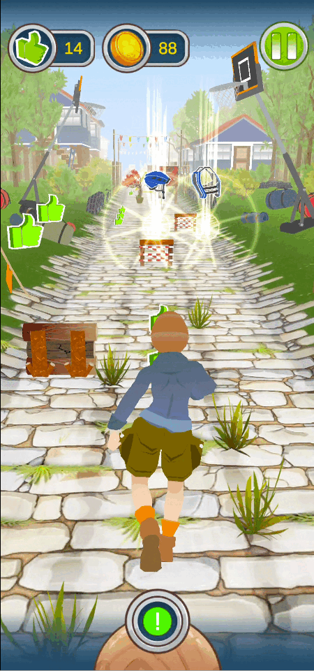
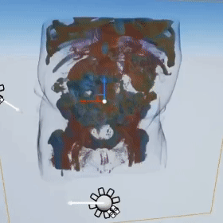
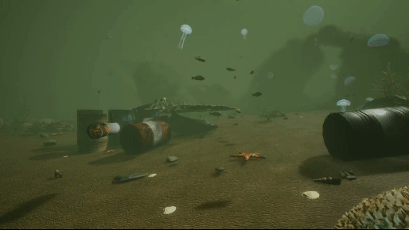
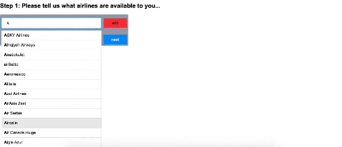

2024 Unreal Freenlancer
Aim at creating semi-auto game creation plugin into commercial game engine.

Aim at creating semi-auto game creation plugin into commercial game engine.
Join Limbic and work on Park Beyond project with UE4 C++
Park Beyon is park management game, players control over every aspect of developing and maintaining successful theme parks.
Mainly responsible: rendering, performance optimization, customization, console, DLC integration and gameplay support
Research Project: SOLVE
SOLVE is a serious game, the core game is based on endless runner. The playful approach in combination with an intervention therapy The offer is intended to motivate young people to change their behaviour. More detail visit [Website]
SOLVE uses Unity and deploies into android devices. My resposiblity in project includes UI/UX, chatbox system and player controller.
Constructed Computer Tomography data in HLSL language, with Ray Marching algorithm and Octree to speed up perfromance, the result runs in virtual reality operation room with UE4. Find out more research result in the cgvr [Website]
The paper has been published in EuroVR 2020: Volumetric Medical Data Visualization for Collaborative VR Environments [Paper Link]
VReef simulates a polluted underwater environment in virtual reality with Unreal Engine and HTC VIVE. VReef is designed to awaken human consciousness of environmental protection. Contribution: gameplay, redering massive data and designed preoject website, find our research more in [CGVR VReef]
KIpro is a AI-supported platform for assisting production control to improve energy efficiency. The project researched several neural network models such as SSD, Alexnet and Auto Encoder in Kera, Tensorflow and trained in google cloud platform. The final frozen models deoply in android and webcamera. Find out more in institution website [BIK Website]

Utilized topic Modeling and Latent Dirichlet Allocation to understand customers review(text) in airline in order to generate a recommendation system, provide the suggestion based on user input
